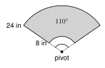

1. 10 π
2. 23
3. x = 120
θ = sr = 124 = 3 radians
a. s = 10 inches, r = 2.5 inches 102.5 = 4 radians
b. s = 9 feet, r = 6 feet 96 = 1.5 radians
| Degrees | 30° | 45° | 60° | 90° | 180° | 360° |
|---|---|---|---|---|---|---|
| Radians | π6 | π4 | π3 | π2 | π | 2 π |
45 · π180 = 45 π180 = π4
150 · π180 = 150 π180 = 5 π6
5 π3 · 180π = 5 · 1803 = 300°. The π cancels.
2 · 180π ≈ 114.59°
70 · π180 = 7 π18 ≈ 1.22 radians
a. 36° to radians
π5
b. 225° to radians
5 π4
c. 7 π6 radians to degrees
210°
d. 1.5 radians to degrees (nearest hundredth)
1.5 · 180π ≈ 85.94°
| Degrees (n°) | Radians (θ) | |
|---|---|---|
| arc length | n360 · 2 πr | rθ |
| sector area | n360 · πr2 | 12r2θ |
s = rθ
8 · 3 π4 = 6 π ≈ 18.85 cm
A = 12r2θ
12(8)2 · 3 π4 = 24 π ≈ 75.40 cm2
s = 6(2.5) = 15 in. A = 12(6)2(2.5) = 45 in2
θ = 148 = 1.75 radians. 1.75 · 180π ≈ 100.27°
12r2 · π2 = 36 π, so πr24 = 36 π, r2 = 144, r = 12 m
s = 10 · 2 π5 = 4 π ≈ 12.57 in. A = 12(10)2 · 2 π5 = 20 π ≈ 62.83 in2
s = rθ needs θ in radians. 60° = π3. So s = 5 · π3 = 5 π3 ≈ 5.24.
s = rθ = 13 · 3 = 39 inches

110° = 110 · π180 = 11 π18 radians
A = 12(24)2θ − 12(8)2θ = 12(512)θ = 256 · 11 π18 ≈ 491.5 in2
s = 15 · 4 π3 = 20 π ≈ 62.8 in
1. One radian is the central angle whose arc is as long as the radius.
2. A full turn is 2 π radians. Half a turn is π radians.
3. Degrees to radians: multiply by π180.
4. s = rθ and A = 12r2θ need θ in radians.
1. s = 15 in, r = 5 in 3
2. s = 7 ft, r = 2 ft 3.5
3. s = 3 m, r = 1.2 m 2.5
4. 30° π6
5. 120° 2 π3
6. 135° 3 π4
7. 300° 5 π3
8. 18° π10
9. 80° 4 π9
10. π3 60°
11. 7 π4 315°
12. 3 π10 54°
13. 4 π3 240°
14. Change 3 radians to degrees. 171.89°
15. Change 0.8 radians to degrees. 45.84°
16. Change 200° to radians. 10 π9 ≈ 3.49
17. r = 9 inches, θ = π3
s = 3 π ≈ 9.42 in. A = 12(81)π3 = 13.5 π ≈ 42.41 in2
18. r = 4 feet, θ = 2.5
s = 10 ft. A = 12(16)(2.5) = 20 ft2
19. r = 10 meters, θ = 7 π6
s = 35 π3 ≈ 36.65 m. A = 12(100)7 π6 = 175 π3 ≈ 183.26 m2
20. An arc is 18 centimeters long on a circle with radius 6 centimeters. Find θ and the sector area.
θ = 186 = 3 radians. A = 12(36)(3) = 54 cm2
21. A sector with radius 6 inches has an area of 12 π square inches. Find θ in radians and in degrees.
12(36)θ = 12 π, so θ = 2 π3 radians = 120°
22. A Ferris wheel has a radius of 30 feet. A seat turns through 4 π3 radians. How far does the seat travel? Round to the nearest hundredth.
s = 30 · 4 π3 = 40 π ≈ 125.66 ft
23. A wiper blade covers the part of the arm from 6 inches to 22 inches from the pivot. The wiper swings through 120°. How much glass does it clean? Round to the nearest hundredth.
120° = 2 π3. A = 12(484 − 36)2 π3 = 224 · 2 π3 = 448 π3 ≈ 469.14 in2
24. A pendulum 50 centimeters long swings through an angle of 0.4 radians. How far does the tip travel?
s = 50(0.4) = 20 cm
25. Daniel says that an arc on a circle with r = 12 and a central angle of 30° has length 12 · 30 = 360. Find his mistake. What is the correct arc length? Round to the nearest hundredth.
He used degrees in s = rθ. 30° = π6 radians, so s = 12 · π6 = 2 π ≈ 6.28.
A. 165°
B. 210°
C. 330° ← correct
D. 660°
A. 0.67
B. 1.5 ← correct
C. 6
D. 216
s = 2 πr and A = πr2. A full turn is the whole circle, so you get the circumference and the area.
One turn in 60 minutes: 2 π ÷ 60 = π30 ≈ 0.10 radians. s = 6 · π30 = π5 ≈ 0.63 inches.